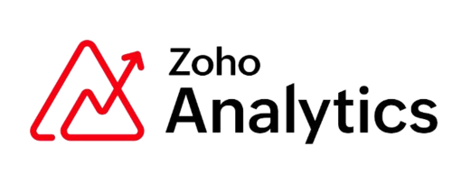
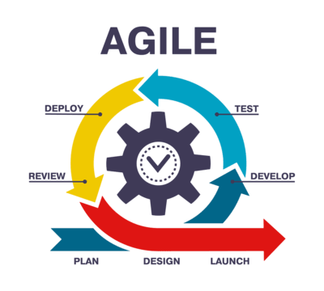
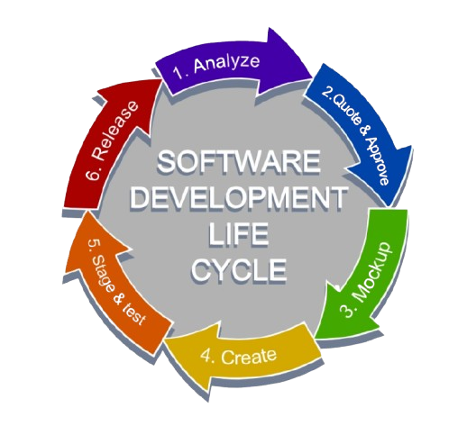
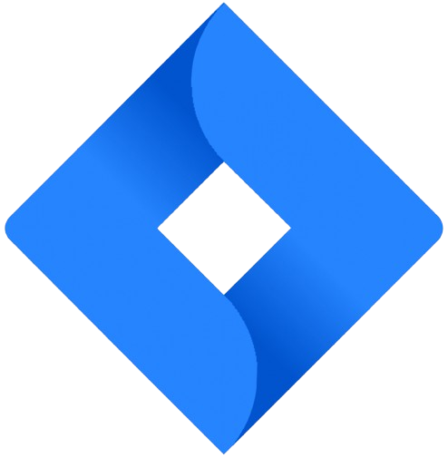
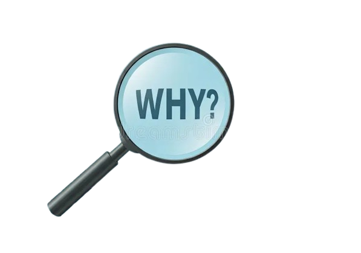

Skills & Tools
Technical Skills
HTML5
Structure & Markup
Structure & Markup
CSS3
Styling & Layout
Styling & Layout
JavaScript
Dynamic Interactions
Dynamic Interactions
SQL
Queries, Joins, Data Handling
Queries, Joins, Data Handling
UiPath
Automation with RPA
Automation with RPA

Zoho Analytics
Dashboards & Reporting
Dashboards & Reporting
 PowerBI
PowerBIBusiness Visualizations
 Tableau
TableauInteractive Reports
 MS Office
MS OfficeDocs, PPT, Advace Excel, outlook
Project Management & Domain

Agile & Scrum
Daily Standups, Sprint Planning
Daily Standups, Sprint Planning

SDLC Execution
Requirement Gathering to Go-Live
Requirement Gathering to Go-Live

Jira & Task Mgmt
Backlog, Sprints, Team Tracking
Backlog, Sprints, Team Tracking
Client Handling
Calls, Demos, Documentation
Calls, Demos, Documentation

Root Cause Analysis
Incident Analysis & Planning
Incident Analysis & Planning